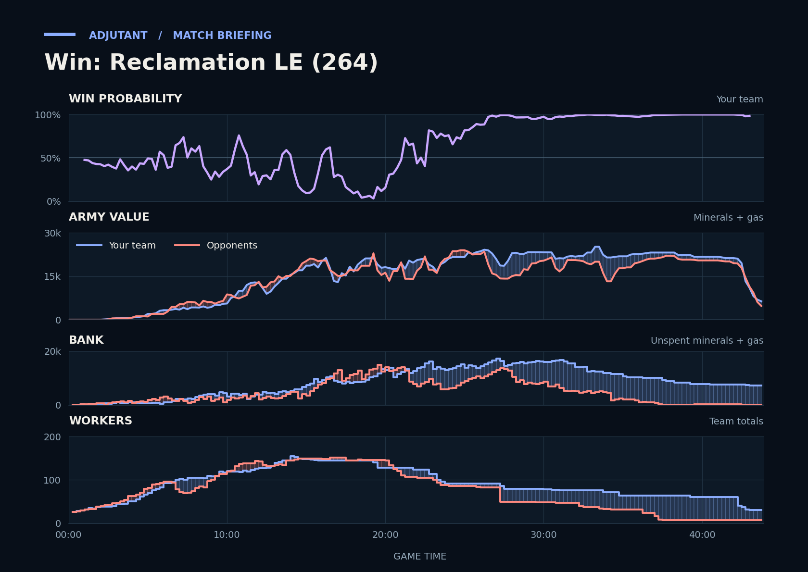

Win: Reclamation LE (264)
Provisional debrief. The full report (timeline, insights and analysis) is being generated.

Cached narration uses different analysis inputs (facts, engine notes, prompts or model settings). It has not been regenerated for this report.
**Win.** Scallop's Vikings kept killing FartGarfunkl's Probes and Nexuses, starting with the raid at 20:01.
**Why**
- 16:14–17:54: Scallop's Vikings killed Carriers and Void Rays, but TakeTheTip's army fell to about 6,100 by 16:39.
- 20:01–21:14: Vikings killed 17 Probes and FartGarfunkl's fourth Nexus; their workers kept dropping afterward.
- 41:54–43:51: TakeTheTip's Corruptors killed 7 Carriers, leaving you nearly twice the opponents' army, despite heavy Drone losses.
Current engine analysis: Win. Review 15:22–15:51: you won a fight (2,500 killed, 1,600 lost). The biggest fight came at 41:54–43:51 (18,750 lost, 16,850 killed).